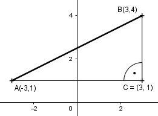

Pythagoras Aufgabe 25 Berechnen Sie die Länge der Strecke AB in cm.  AC = |-3| cm + 3 cm = 6 cm CB = 4cm - 1 cm = 3 cm Satz von Pythagoras im Dreieck ACB: AB2 = AC2 + CB2 AB2 = 62 cm2 + 52 cm2 = 45 cm2 |√ AB = 45cm2 = 6,7 cm
Pythagoras Aufgabe 25 Berechnen Sie die Länge der Strecke AB in cm.
